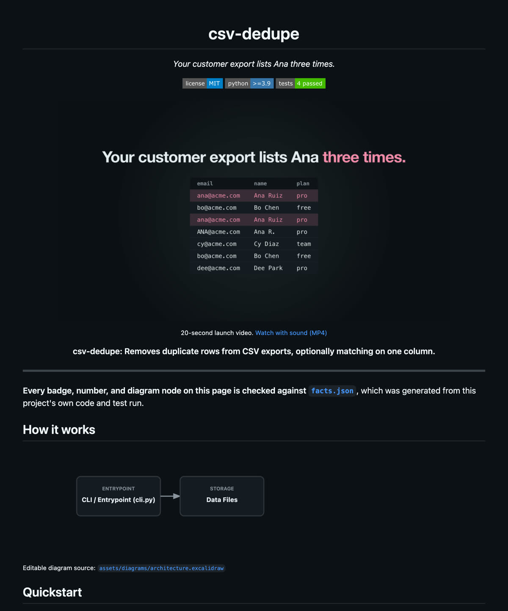

Agentic-ReadMe-Creator writes your README from your code, then fails the build if the two ever disagree. It can also turn the result into a 20-second launch video.
Most README generators start by writing. This one starts by measuring what's true about the code, then only lets the README say that.
Collects the tests, reads the license and config, runs the CLI's --help. Writes facts.json.
Rewrite the hook in story.yaml as the problem a stranger recognises.
README, light and dark diagrams, and a video storyboard, all built from those two files.
Badges, numbers, and links are checked against facts.json. Exits 1 on a lie.
An AI agent renders the storyboard with /brag. It becomes the README's top image.
A small Python tool that removes duplicate rows from CSV exports. It had working code, 4 tests, and sample data, but no README. Here's every step, with the real output from each command.
cli.py to find out what this does.
Before writing a word, the tool reads the project and saves 9 facts, each with the file it came from. Everything written later has to match these.
$ agentic-readme ground . # absolute paths shortened [Phase 0: GROUND] Analyzing repository at …/csv-dedupe... ✔ Locked contracts created: - Story Spec: .agentic-readme/story.yaml - Facts Ledger: .agentic-readme/facts.json (9 facts recorded)
// facts.json (excerpt) test_count 4 ← tests/ license "MIT" ← LICENSE python_version ">=3.9" ← pyproject.toml python_loc 60 ← . cli_help_output "usage: cli.py [-h] [--key KEY] [-o OUTPUT] path" ← cli.py
The default hook is just the package description. It's accurate, but nobody stops scrolling for it. This is the only manual step, and it matters most: name the problem a stranger already has. The new line comes from the repo's own sample data (data/contacts.csv really does list Ana three times).
- hook: Removes duplicate rows from CSV exports, optionally matching on one column. + hook: Your customer export lists Ana three times.
Every asset is built from the two locked files. Nothing new is invented at this stage. Until a real video exists, the top image is a drawn terminal preview, and the README says so instead of passing it off as a recording.
$ agentic-readme produce . [Phase 1: PRODUCE] Generating assets from locked story & facts... ✔ Diagram Agent: generated .excalidraw + light/dark SVGs ✔ Demo Agent: generated VHS script + hero asset ✔ Video Agent: generated /brag 20s spec + scene table ✔ Writer Agent: generated candidate README.md
<!-- README.md, under the hero image -->
<sub>Illustrated preview of the quickstart,
not a screen recording. Record the real run
with <code>vhs assets/demo/demo.tape</code>.</sub>
The first check passes. Then we edit the tests badge from 4 to 40 and run the read-only audit. It fails with exit code 1, so a CI job would block that pull request.
$ agentic-readme verify . [Phase 2: VERIFY] Running cross-asset verification & claim auditing... ✔ Verification PASSED (23 facts checked, 0 fatal bugs) Summary: 23 facts checked. 0 fatal errors, 0 warnings.
- badge/tests-4%20passed + badge/tests-40%20passed $ agentic-readme audit README.md --facts .agentic-readme/facts.json # report table flattened to lines fact_drift │ Fatal Functional Bug Test count badge drift: badge claims 40 tests passed, but facts ledger records 4. Summary: 23 facts checked. 1 fatal errors exit=1
produce also wrote a problem-first storyboard: hook → reveal → real run → proof → how to get it. The agent rendered it with /brag, running the real command and copying its actual output. Then produce ran again and swapped the drawn preview for the video on its own. Verify: 23 facts, 0 errors.
// assets/video/scenes.md (generated) 00.0–03.0 Hook Your customer export lists Ana three times. 03.0–06.5 Reveal csv-dedupe. Removes duplicate rows from CSV exports... 06.5–11.5 Real run python3 cli.py ... 11.5–16.5 Proof 4 passing tests · 60 lines 16.5–20.0 Get it pip install -e .
Before the case study, we ran the tool on three small sample projects and read every line it wrote. Each problem below turned up that way, was fixed, and now has a test so it can't come back.
It pasted the package description into a canned template.
Any data/ folder was labelled with a leftover from another project.
Its pattern swallowed the badge color, which left a broken image.
It counted test files, not test cases.
Line counts always cited src/, and test counts always cited tests/.
The hero image is drawn, but the text under it claimed otherwise.
Every repo got the same scenes, which were about the tool itself.
It stopped at a storyboard file, and nothing embedded a video.
All three end the same way: a README where every number is checked against the code.
Two copy-paste commands. Python gets installed for you.
# Mac: open Terminal, paste, press Enter curl -LsSf https://astral.sh/uv/install.sh | sh # open a new Terminal window, then uv tool install --python 3.12 git+https://github.com/Chirudeva-Reddy/Agentic-ReadMe-Creator.gitStep-by-step guide, with Windows →
Python 3.11+. Commit your README first, because produce overwrites it.
pipx install git+https://github.com/Chirudeva-Reddy/Agentic-ReadMe-Creator.git
agentic-readme ground .
# edit hook: in story.yaml
agentic-readme produce .
agentic-readme verify .
Add it to CI →
Install the skill, then just ask. It runs all five steps and asks before installing /brag.
mkdir -p ~/.claude/skills/agentic-readme
curl -o ~/.claude/skills/agentic-readme/SKILL.md \
https://raw.githubusercontent.com/Chirudeva-Reddy/Agentic-ReadMe-Creator/main/skills/agentic-readme/SKILL.md
# then, in your project:
"Use agentic-readme to write my README, with a launch video."
Read the skill →